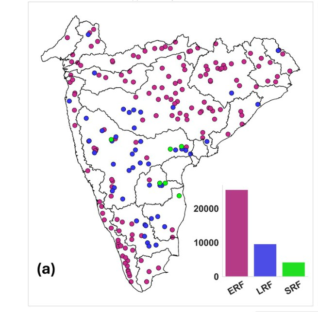
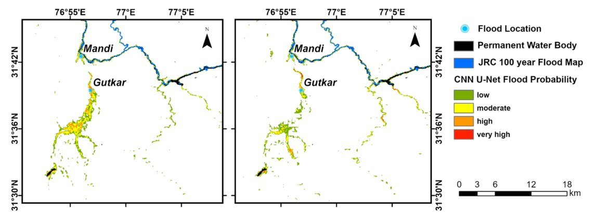
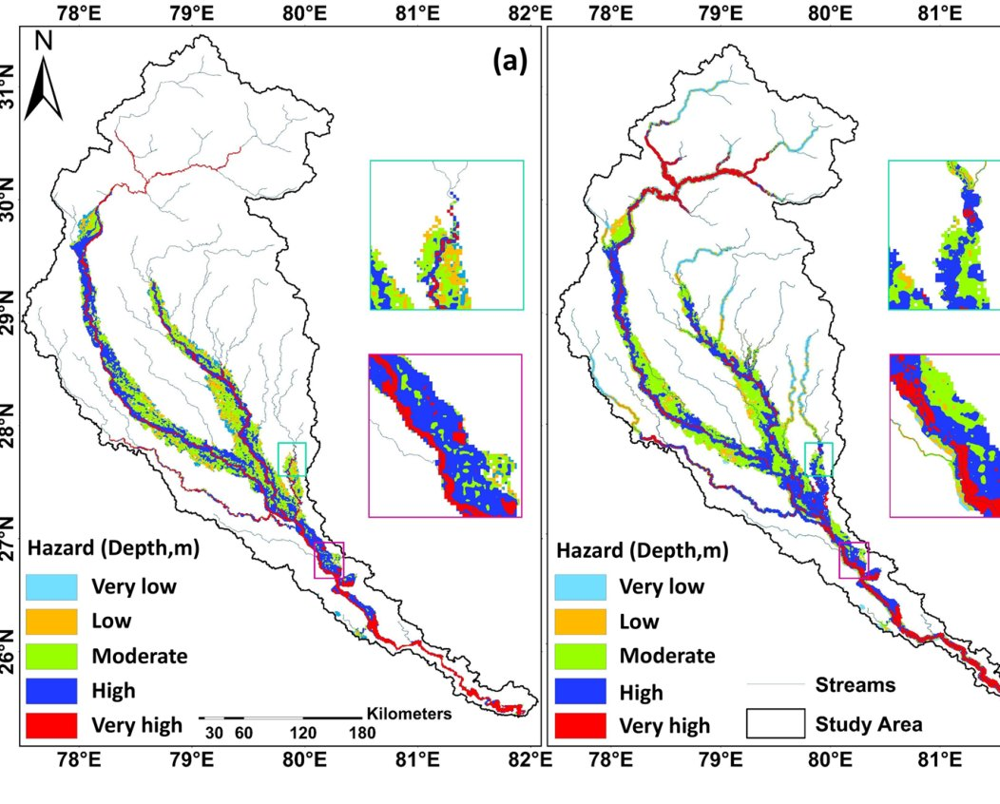
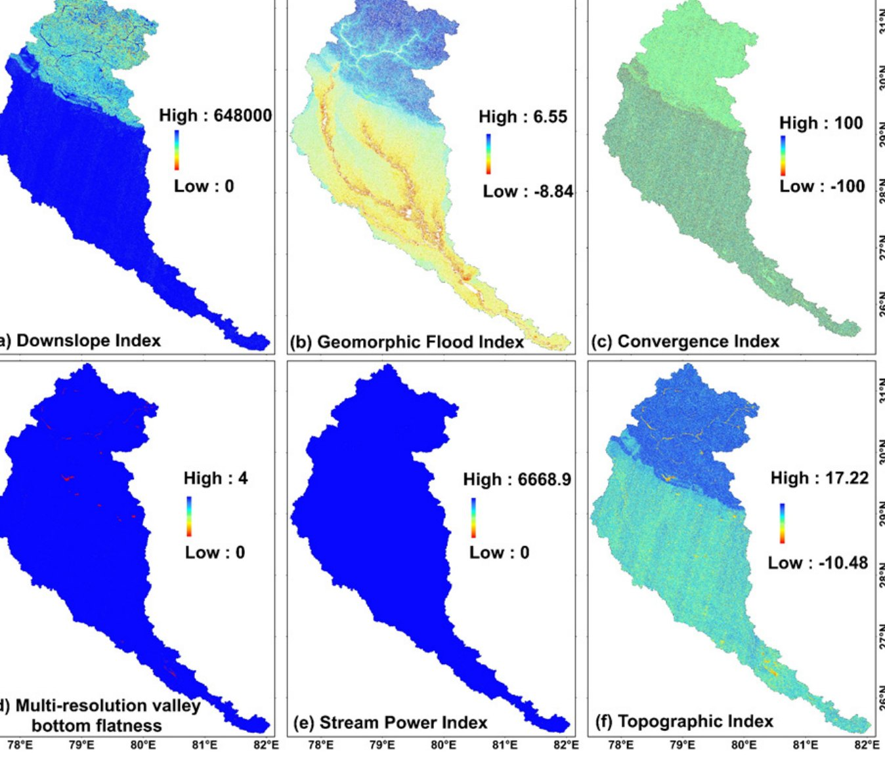

Journal of Hydrology (2026)
Flood Hazards & Inundation Modelling
Hydrodynamic simulation of the 2023 Delhi flood and its coupled public-health risk, linking inundation hazard with water quality along the Yamuna.
Read the paper ↗Research Domains
Eight themes anchor the work, each illustrated here with a figure from a published paper.
Each dot is one of 206 gauged catchments in Peninsular India, coloured by its dominant flood-generating process. Switch the criterion, or the catchment group, to see how the picture changes.

By event count: 153 of 206 catchments are excess-rain dominated, 47 long-rain, 6 short-rain.
Source: Tripathi et al., Earth's Future (2026) · DOI ↗
Hydrodynamic simulation of the 2023 Delhi flood and its coupled public-health risk, linking inundation hazard with water quality along the Yamuna.
Read the paper ↗
Interpretable deep learning on flood-generating processes, revealing how rainfall, soil moisture and temperature interact to drive floods across India.
Read the paper ↗
En-LSTM, a multi-station deep-learning framework for daily streamflow prediction that outperforms station-specific models and SWAT+ in data-scarce, heterogeneous basins.
Read the paper ↗
Sentinel-1/2 and GPM-IMERG analysis on Google Earth Engine tracing how cloudbursts cascaded into landslides and floods in the Western Himalayas.
Read the paper ↗
A stacking ensemble with explainable AI that maps flood susceptibility over the Kosi megafan and identifies elevation, rainfall and curve number as key controls.
Read the paper ↗
A compact CNN U-Net framework for rapid flood susceptibility mapping in Himachal Pradesh and Uttarakhand, validated against Sentinel-1 flood extents from the 2025 monsoon.
Read the paper ↗
A hybrid framework coupling geomorphic flood descriptors with machine learning to quantify flood hazard and population exposure over the data-scarce Ganga sub-basin.
Read the paper ↗
Testing how well terrain-derived geomorphic descriptors, fed to machine-learning models, reproduce flood inundation over the Ganga sub-basin.
Read the paper ↗Hydroclimatic Extremes / Flood Inundation Modelling / Streamflow Forecasting / Remote Sensing & Geospatial Hydrology / Ungauged Basin Hydrology / Physics-aware & Explainable AI / Monsoon-driven Catchment Hydrology / Climate Change & Water Resources